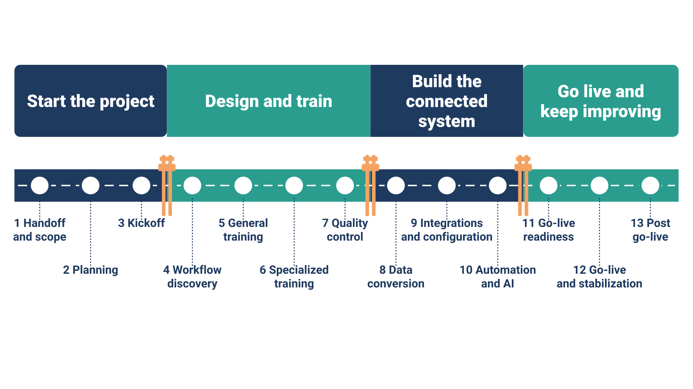

Learn to lead an EHR implementation, start to finish.
The Electronic Health Record Implementation Certificate (EHRIC) teaches you to take a clinic from signed contract to go-live and beyond, and proves it with a proctored exam and real-world work products. Vendor-neutral. Built from years of clinic go-lives.
Apply for the free pilotSee the programAlready enrolled? Sign in to your course →
What you'll learn
13 modules follow one implementation through four stages. Every module ends with a checklist "gate," just like a real project file, so you learn what has to be true before the project moves on.
1. Start the project
Sales handoff, scope, planning, and the client kickoff.
2. Design and train
Workflow discovery, role-based training, and quality control.
3. Build the connected system
Data conversion, integrations, billing transactions, automation, and AI.
4. Go live and keep improving
Readiness, go-live command center, stabilization, and the first 90 days.

- Handoff and scope
- Planning
- Kickoff
- Workflow discovery
- General training
- Specialized training
- Quality control and testing
- Data conversion
- Integrations and configuration
- Automation and AI
- Go-live readiness
- Go-live and stabilization
- Post go-live: optimization and value
How it works
Built on how adults actually learn: short sections, quick self-checks, worked examples, spaced review, and practice in the format of the final exam.
📘 The course book
An 8.5 × 11 illustrated textbook with a plain-language glossary. Read in print, as a PDF, or online.
💻 Online lessons and quizzes
Short lessons with "Check yourself" questions, module quizzes with explanations, and review quizzes along the way.
🏥 Practice clinic
Work through a fictional internal-medicine practice, with worked examples and assignments in every module.
📝 Capstone and final exam
Produce three real implementation work products, then pass a proctored final exam written to professional exam standards.
About 50 hours of study, self-paced, with up to 6 months to finish. No prior certificate required; one year of work in healthcare operations, IT, or projects is recommended.
Join the free pilot
We're looking for 10 to 30 people to take the full program free, over about 6 weeks, before public launch, and to tell us honestly what works and what doesn't. Pilot learners who meet the final standards receive the certificate.
Form not showing? Open the application in a new tab.
Questions
Is this a certification?
EHRIC is a certificate issued by MAS Publishing Company after a proctored exam and capstone. The program is working toward independent accreditation. It is not a license or a vendor (for example, Epic) certification.
Does it count toward other credentials?
We're confirming how EHRIC hours count toward recognized health IT certifications. We'll list each one here only after the certifying organization confirms it.
Do I need IT experience?
No. The course starts from the beginning. Front-desk, clinical, billing, IT, and project backgrounds all help.
What does it cost?
The pilot is free. Public pricing will be announced at launch.